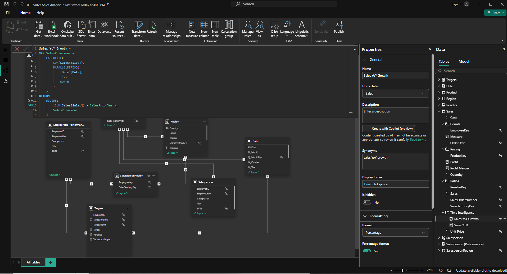

Overview
This final task focuses on using time intelligence in Power BI
to analyze data across time-based periods. It highlights how DAX
functions can be used to compare results over days, months,
quarters, and years, helping transform raw business data into
more meaningful trend analysis and performance insights.
01
Data Preparation
- Load and review the dataset inside Power BI
- Check the date fields needed for time-based analysis
- Prepare or validate the calendar and related data tables
- Ensure the dataset is structured for reliable DAX calculations
02
Time Intelligence Measures
- Create DAX measures for period-based analysis and comparisons
- Apply time intelligence functions such as month-to-date, quarter-to-date, and year-to-date calculations
- Compare current performance with previous periods where applicable
- Organize measures clearly for easier report development and interpretation
03
Analysis and Visualization
- Build visuals that show trends and changes over time
- Highlight important patterns, increases, decreases, and comparisons
- Use report formatting tools to make the dashboard clear and professional
- Present insights in a way that supports analysis and decision-making
04
Output Files
Time Intelligence Model
